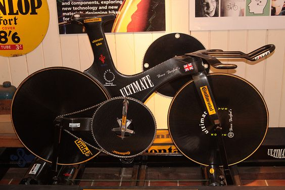
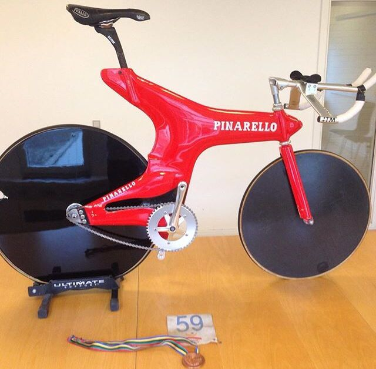

Innovaciones Aerodinámicas en Bicicletas Crono y Pursuit

Manillares Aero
Los manillares de contrarreloj mejoraron la postura del ciclista, permitiendo una posición más aerodinámica y una mayor eficiencia en pruebas de larga distancia.
Materiales Innovadores
La introducción de la fibra de carbono permitió marcos más ligeros y optimizados, mejorando la aerodinámica y el rendimiento general.
Geometría Agresiva
Las bicicletas de pista Pursuit y Crono adoptaron geometrías diseñadas para mejorar la postura del ciclista, permitiendo reducir la resistencia al viento.
Ruedas de Disco
Las ruedas de disco revolucionaron la aerodinámica en las bicicletas de pista, reduciendo la turbulencia y permitiendo a los ciclistas alcanzar mayores velocidades.
